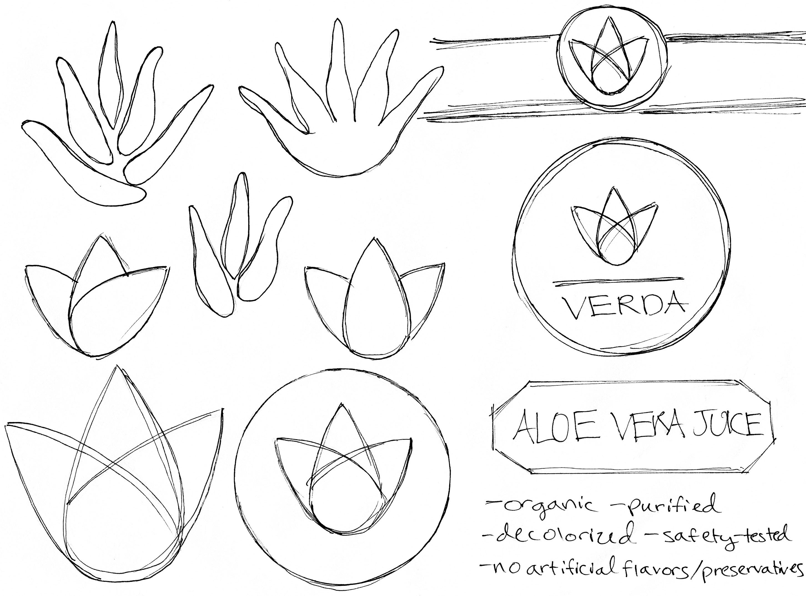
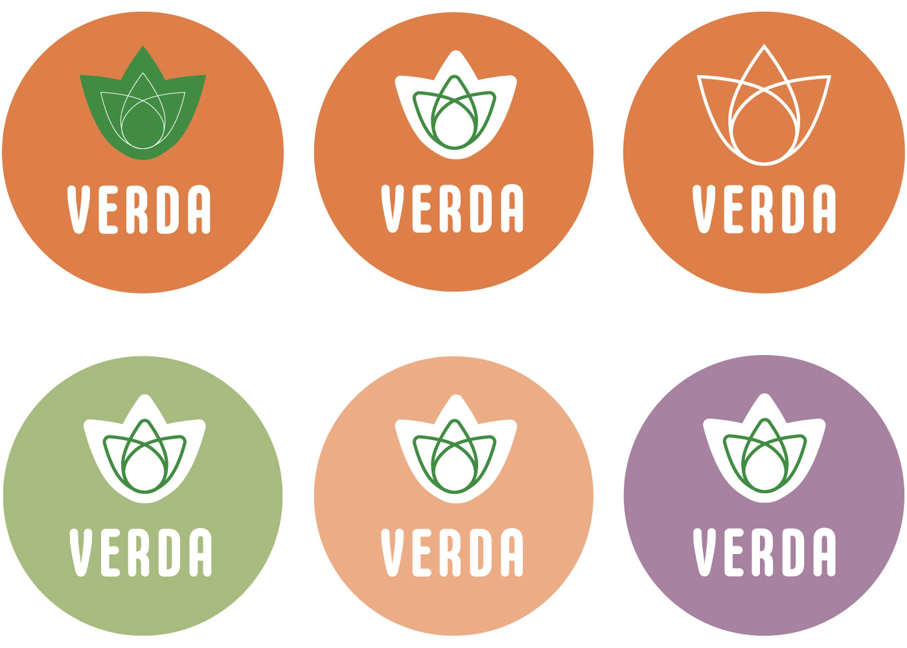
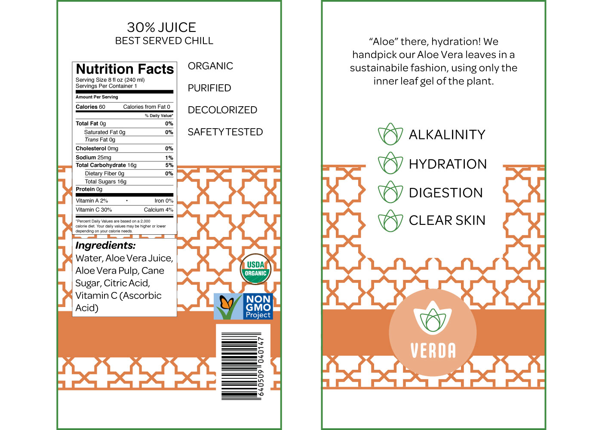
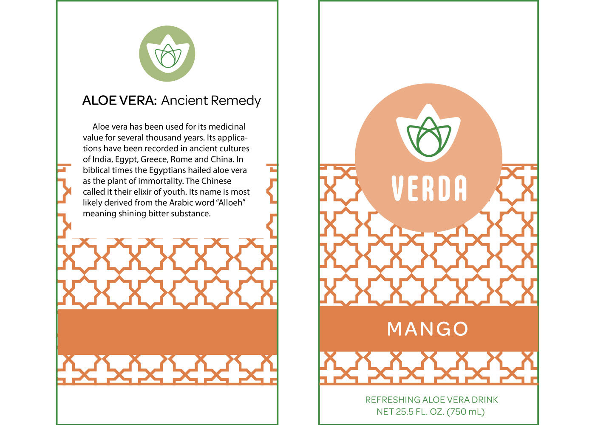
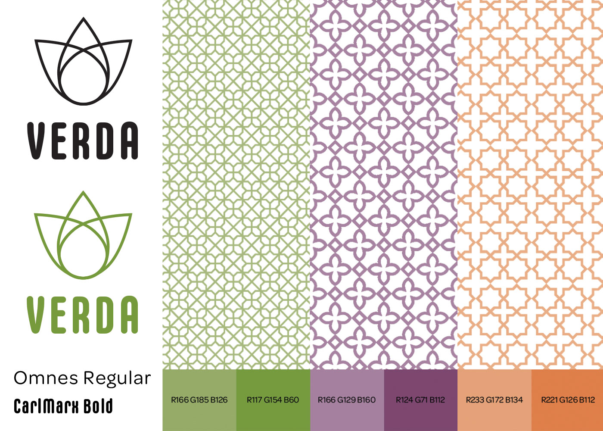
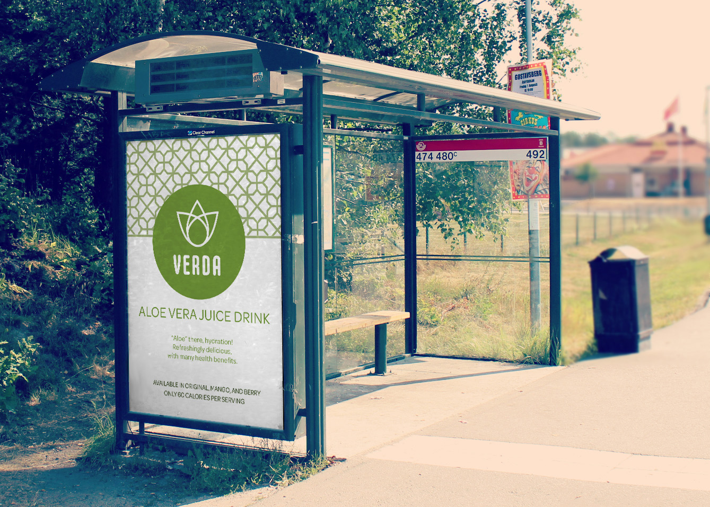
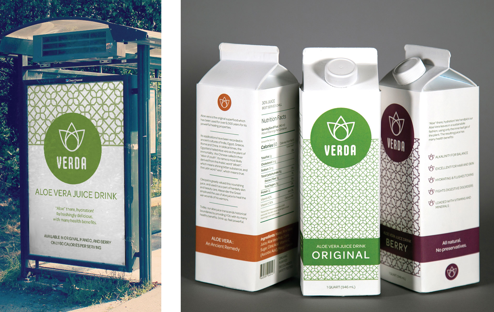
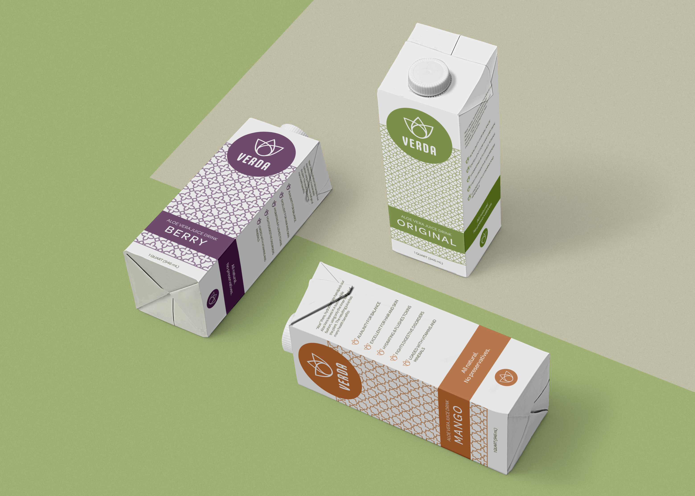

Verda
Branding & Packaging Design
Rising concerns about health complications have increased consumer health consciousness over the past few years, driving a demand for different products in the beverage industry. Since aloe vera juice is a newer beverage known for its health benefits, and there are a limited number of brands in the market, one of my classmates and I decided to create a new company and juice line.




We decided the company favored geometric and historical or mythological qualities. The word “verda” means truth in Spanish, which is the same meaning as the species’ name “vera” in Latin. To harken to the historical uses of the aloe vera plant and its origin from the Arabian peninsula, we created three Arabian geometric patterns for each flavor. The lighter colors correspond to the pattern. The darker colors correspond to the flavors displayed on the cartons: original, mango, and berry. Below the final designs are displayed.




